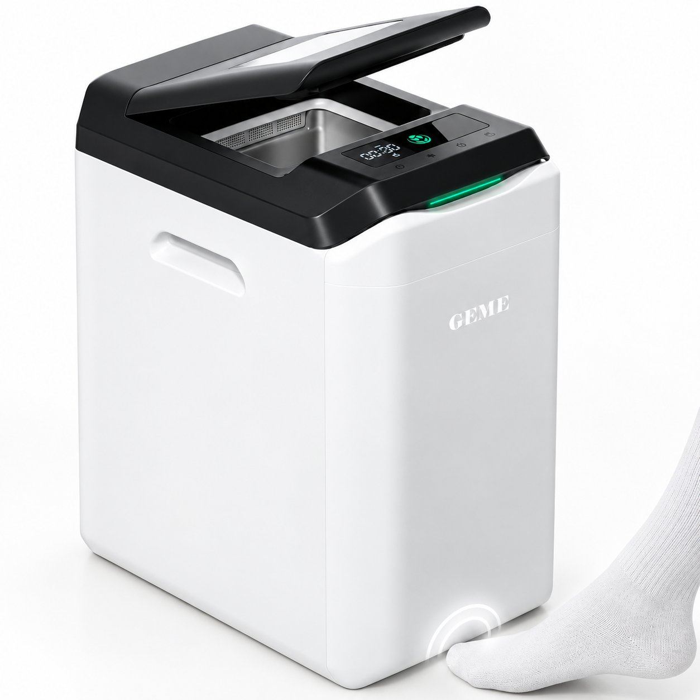

Review — Kitchen machines
GEME Terra 2: the countertop composter that’s not a dehydrator
The Terra 2 swaps the dehydration drum for a live microbial ecosystem: 2 kg of kitchen waste a day, meat and dairy included, and a purification system with no replaceable parts. Here are the manufacturer’s numbers, the three-year cost math, and the tradeoffs the spec sheet leaves out.
Disclosure: we’re a GEME Bio partner. The Terra 2 link on this page is a partner link — it never changes the verdict, and the tradeoffs below include things we’d rather you knew before buying. Full disclosure
No. K-06 — The verdict
One line: buy it if you’re done paying for filters and you want to feed a machine — meat included. Skip it if you want bagged, shelf-stable finished compost out the back.
A bioreactor, not a dehydrator
Every countertop composter on the market until recently did the same job by the same method: heat the scraps, bake out the water, and call the dry flakes “compost.” The Terra 2 is built on the other camp — it runs a live, self-replicating microbial ecosystem and lets digestion do the work. GEME calls the core community Kobold, and a control layer it calls GEMEBrain adaptively regulates heat, airflow, moisture, and mixing so the biological process keeps working. The result GEME publishes: 400+ types of kitchen bio-waste accepted, up to 95% volume reduction under an approved mass-balance method.
The practical difference shows up in three places. Input: a heating drum bakes — it can handle produce and some meat, but it’s batch-limited and the chemistry of what comes out is “dried food.” A running microbial chamber takes meat, dairy, and small bones on the same continuous feed as peels and coffee grounds, and the output is genuinely alive. Rhythm: dehydrators run a batch cycle you wait for; the Terra 2 processes continuously, 24/7, and you just keep tossing. Purification: dehydrators pair the drum with a replaceable carbon or filter cartridge you buy every few months. The Terra 2 uses Metal Ion Oxidation — a permanent, filter-free system with no recurring purification cost at all.
The full spec sheet
| Parameter | GEME Terra 2 |
|---|---|
| Chamber volume | 14 L (continuous feed, 24/7) |
| Throughput | 2 kg/day (manufacturer claim, test conditions) |
| Accepts | 400+ kitchen bio-waste types — produce, meat, dairy, small bones, coffee grounds, leftovers |
| Output | Moist active compost substrate; up to 95% volume reduction (approved mass-balance method) |
| Purification | Metal Ion Oxidation — permanent, no filter replacement, no subscription |
| Control | GEMEBrain adaptive control: heat, airflow, moisture, mixing |
| Microbes | Kobold self-replicating microbial ecosystem |
| Footprint | 56.6 cm tall · W297 × D437 mm (≈ 11.7″ × 17.2″) |
| Weight | 13.0 kg (6.5 kg lighter than the GEME Pro) |
| Noise | ≤35–40 dB (test conditions; varies with placement, surface, load, operating stage) |
| Cleaning cadence | Every 3–6 months (manufacturer guidance) |
| Price | $699 US list; periodic promos run (a $659 Halloween special was live in late Oct 2026) |
| Returns & shipping | 30-day money-back guarantee; free shipping to US & EU; 3–7 day delivery estimate |
| Recognition | Design Award Winner 2025 |
All figures as published by GEME Bio on the Terra 2 product page (checked Oct 26, 2026). Throughput, noise, and reduction numbers are measured under test conditions; real-world results vary with input mix and moisture. We have not yet run our own controlled mass-balance test — when we do, this table gets our numbers next to theirs.
The three-year math: $699 once, $0 after
The reason the $699 sticker is survivable is the line below it. Dehydrator-style smart bins sell cheap and bleed on consumables — a filter or cartridge roughly every quarter. The Terra 2’s Metal Ion Oxidation system has no replacement parts, so the three-year bill is the sticker. GEME’s own published comparison runs the numbers:
| 3-year cost | Typical smart bin | GEME Terra 2 |
|---|---|---|
| Machine | $499 | $699 |
| Consumables (3 yr) | ≈ $600 (filters ≈ $60/quarter) | $0 (permanent) |
| Total | ≈ $1,099 | $699 |
GEME’s framing: the extra $200 against a typical $499 dehydrator pays back in about 3 months once filter costs are counted. The ≈$60/quarter figure is the published consumable price for the dehydrator-style bins it compares against — verify the current price of whichever bin you’re actually comparing before you trust any single number. Neither side carries a subscription fee.
What comes out the back is active compost — not a dry chip
Here’s the tradeoff the marketing softens: the output is a moist, active compost base. It’s living material — the beneficial bacteria survive because nothing was roasted at high temperature — but it’s not a dry, bagged, shelf-stable finished product you can store in a garage. GEME’s guidance is to mix it 1:8 with soil for garden use, and the final stretch of maturation happens in the ground. If you want bagged finished compost, that’s a yard-pile or worm-bin job, not a countertop-machine job. If you have a garden, a patch of bed, or a community plot, the substrate is arguably better than dried flakes, because it’s already inoculated with active decomposers.
What it earns, and what it costs you
What it earns
- Takes meat, dairy, and small bones — the one input no dehydrator on this page handles at the same volume.
- Zero consumables: the permanent Metal Ion Oxidation system means no filters, no cartridges, no subscription.
- Continuous 24/7 feed — no batch cycle to wait for, no tray to dump mid-cycle.
- 14 L continuous chamber — a full day of a small household’s scraps, versus dehydrator drums that turn one small batch at a time.
- 13.0 kg — 6.5 kg lighter than the GEME Pro; its “lightweight architecture” is built for apartment kitchens.
- GEMEBrain adaptive control handles heat, airflow, moisture, and mixing — there’s nothing to tune.
- 30-day money-back guarantee, free US/EU shipping, direct factory warranty access.
What it costs
- The output is a moist active substrate, not bagged finished compost — the last mile happens in your soil.
- 2 kg/day is a manufacturer claim under test conditions; we don’t have our own mass-balance numbers yet.
- $699 is the highest price on the kitchen-composters page.
- ≤40 dB is quiet, not silent — it’s a living machine with airflow and mixing, and sound varies with placement and load.
- Small bones yes; a whole bone-in roast no.
- It’s a countertop machine — a yard pile is still the cheapest tonne of compost on earth.
Terra 2 vs the Pro — and the rest of the lineup
First the question we actually get: Terra 2 or Pro 19 L? Same technology, different chassis. GEME positions the Pro for heavy loads and 4+ person households and the Terra 2 for precision and speed in homes of 1–3. The numbers back the split:
| Parameter | GEME Terra 2 | GEME Pro |
|---|---|---|
| Chamber | 14 L | 19 L |
| Throughput | 2 kg/day | 5 kg/day |
| Built for | 1–3 person households — precision & speed | 4+ person households — heavy loads |
| Footprint | 56.6 cm tall · W297 × D437 mm | 66.5 cm tall · W320 × D455 mm |
| Weight | 13.0 kg | 19.5 kg |
| Cleaning cadence | Every 3–6 months | Every 6–12 months |
| Purification | Metal Ion Oxidation — filter-free on both; no recurring cost on either | |
Both are continuous-feed and both run the same GEMEBrain control and Kobold microbial ecosystem — the difference is throughput and mass, not technology. Terra 2’s reimagined internal structure sheds 6.5 kg versus the Pro’s heavy-duty chassis.
And against the dehydrators on this site, the Terra 2’s case rests on exactly three things: input breadth (meat and dairy at volume), rhythm (continuous, not batch), and consumables ($0, not a quarterly subscription). If none of those matter to you — a small family, mostly produce scraps, and a budget under $400 — a dehydrator earns its place. The full six-machine table with every spec sits in the kitchen composter comparison.
The questions, answered
Does it smell?
Odor control is the Metal Ion Oxidation system’s job — a permanent metal-ion process rather than a replaceable carbon filter, which is also why there’s nothing to reorder. GEME markets it as odor-free and the user reviews on the product page are consistent in backing that up. We don’t have our own air-quality measurements yet; that’s on the test plan and this section gets updated when it lands.
How often do I empty or clean it?
GEME publishes a 3–6 month cleaning cadence, not a daily or weekly chore. The chamber keeps working continuously and the substrate accumulates as compost; when you empty it, you spread the output on the garden at 1:8. Compare that with a dehydrator, where every 1–2 kg batch ends with a tray to dump.
Does it really take meat and dairy?
Yes — that’s the whole point. The chamber is a running microbial ecosystem, not a heating drum, so meat, dairy, and small bones process on the same continuous feed as peels and coffee grounds; GEME’s published spec lists 400+ waste types. One honest caveat: the up-to-95% volume-reduction figure is measured under the approved mass-balance method and varies with input mix — a scrap mix that’s 80% meat will sit at the lower end.
Is the output actually compost?
It’s active compost substrate — living, moist, ready for the ground at a 1:8 mix. It is not dry, bagged, shelf-stable finished compost. If “compost” to you means a bag you can store in the garage, this machine won’t produce that. If it means something you put in the bed and the microbes finish, it does.
Which one — Terra 2 or Pro 19 L?
Terra 2 if you’re 1–3 people and want the smaller footprint (297 × 437 mm, 13 kg). Pro if the household runs 4+ or you’re pushing 5 kg/day and want the longer 6–12 month cleaning cadence. Both are filter-free and continuous — the choice is throughput and chassis, not technology.
What if it’s not for me?
30-day money-back guarantee, free shipping to the US and EU, a 3–7 day delivery estimate, and direct factory warranty access. The list price is $699 and GEME runs periodic promos — a $659 special was live in late October 2026.